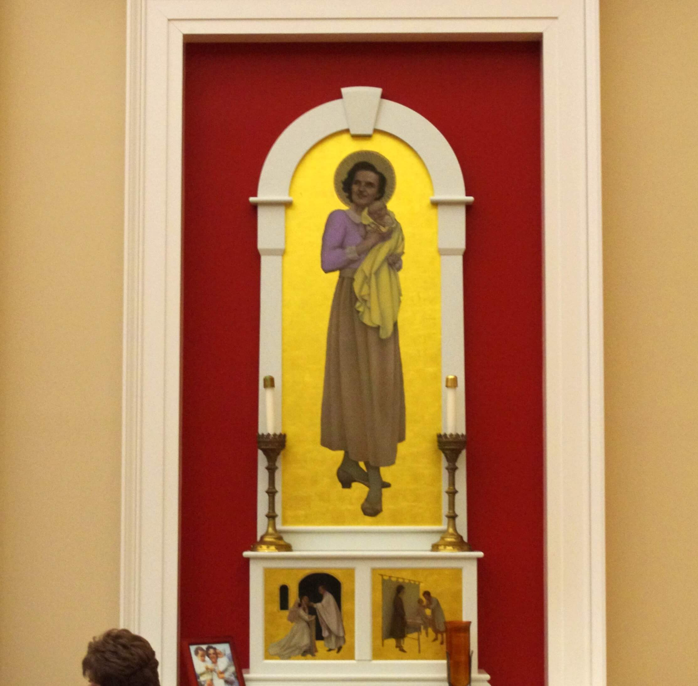
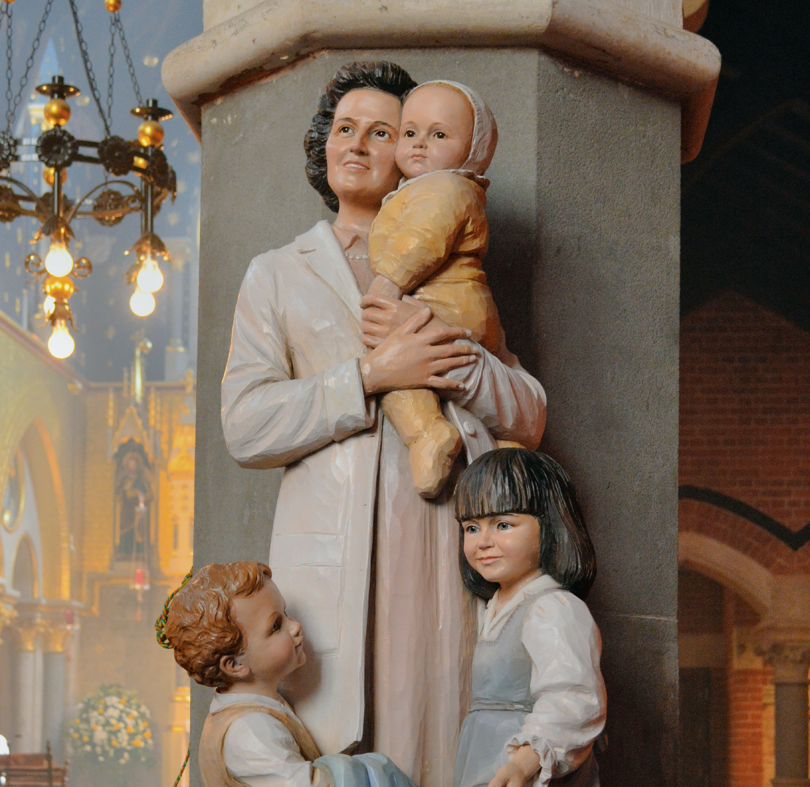

Galeria
Imagens da vida de Gianna Beretta Molla



"A Santa Médica e Mãe"
"A missão da mulher é dar vida."
Gianna Francesca Beretta nasceu em 4 de outubro de 1922 em Magenta, na Lombardia italiana, décima filha de um casal profundamente católico. Cresceu num ambiente de fé viva, alegria e serviço ao próximo. Sua mãe morreu quando ela tinha 19 anos, e seu pai logo depois — perdas que aprofundaram sua espiritualidade sem apagar sua alegria característica.
Era uma jovem moderna e completa: gostava de esqui, montanhismo, teatro e música. Participava ativamente da Ação Católica e da Sociedade de São Vicente de Paulo, visitando pobres e doentes.
Em 1949, formou-se em medicina pela Universidade de Milão e especializou-se em pediatria. Para Gianna, a medicina não era apenas uma profissão — era uma missão apostólica. Dizia que o médico é chamado a ser instrumento da Providência na cura e no alívio do sofrimento humano.
Abriu seu consultório em Mesero, onde atendia crianças pobres muitas vezes sem cobrar. Era conhecida pela dedicação, competência e carinho com os pequenos pacientes.
Em 1955, casou-se com Pietro Molla, engenheiro. O casal teve três filhos: Pierluigi, Mariolina e Laura. Gianna vivia a maternidade com alegria e dedicação, sem abandonar o consultório. Ela queria mostrar que santidade e vida comum — trabalho, casamento, filhos — podiam andar juntos.
Em 1961, grávida do quarto filho, Gianna foi diagnosticada com um fibroma no útero. Os médicos apresentaram três opções: retirada total do útero (salvaria a mãe, mataria o bebê), aborto terapêutico, ou remoção apenas do fibroma — arriscada para ela, mas que preservaria a gravidez.
Sem hesitar, Gianna escolheu a terceira opção, dizendo claramente: "Se houver que escolher entre minha vida e a do bebê, escolham a do bebê." A cirurgia foi realizada. A gravidez continuou, mas com complicações graves.
Em 21 de abril de 1962, nasceu Gianna Emanuela Molla — saudável. Uma semana depois, em 28 de abril de 1962, Gianna morreu de peritonite séptica, aos 39 anos, repetindo até o fim: "Jesus, eu Te amo." Sua filha Gianna Emanuela tornou-se médica e esteve presente na canonização da mãe em 2004.
39 anos de vida marcados pela alegria, pela medicina e pelo sacrifício supremo de mãe
4 Out 1922
Nasce décima filha de família italiana profundamente católica na Lombardia.
1949 · 27 anos
Gradua-se pela Universidade de Milão e especializa-se em pediatria. Abre consultório em Mesero.
1952
Conclui a especialização e passa a atender crianças pobres frequentemente sem cobrar consulta.
1955 · 33 anos
Casa-se com o engenheiro Pietro Molla. O casal terá três filhos: Pierluigi, Mariolina e Laura.
1961
Grávida do quarto filho, é diagnosticada com fibroma uterino. Escolhe a cirurgia que preserva o bebê, arriscando a própria vida.
21 Abr 1962
Sua filha nasce saudável. Gianna desenvolve peritonite séptica grave nos dias seguintes.
28 Abr 1962
Falece em Mesero repetindo "Jesus, eu Te amo." Sua filha Gianna Emanuela torna-se médica em sua homenagem.
16 Mai 2004
João Paulo II a canoniza em Roma. Sua filha Gianna Emanuela e seu marido Pietro estão presentes na cerimônia.
Os prodígios reconhecidos pela Igreja para sua beatificação e canonização
01
Brasil
Uma mulher brasileira com placenta prévia total — condição que tornava a gravidez fatal para mãe e filho — foi curada milagrosamente após intensa novena a Gianna Beretta Molla. Mãe e filho sobreviveram em perfeita saúde. O Vaticano reconheceu o caso para a beatificação em 1994.
Aprovado em 1993 · para a Beatificação02
América do Sul
Um segundo caso de cura inexplicável atribuída à intercessão de Gianna foi investigado e aprovado pelo Dicastério para as Causas dos Santos. O milagre envolveu uma situação obstétrica de alto risco com desfecho considerado impossível pela medicina, habilitando a canonização em 2004.
Aprovado em 2002 · para a CanonizaçãoImagens da vida de Gianna Beretta Molla


Imagens utilizadas sob licença de seus respectivos autores. Créditos completos disponíveis aqui.
Documentação utilizada para a elaboração deste perfil
giannaberettamolla.org
Fondazione Santa Gianna Beretta Molla — Site oficial em português
Gianna Beretta Molla — Uma Mulher do Nosso Tempo
Pietro Molla e Elio Guerriero · Editora Loyola, 2004
Santa Gianna Molla — Médica, Mãe e Mártir
Simonetta Sanna · Editora Canção Nova, 2010
Canonização de Gianna Beretta Molla — Homilia de João Paulo II
Santa Sé · 16 de maio de 2004
Senhor Jesus, Tu que és o autor de toda vida, concede-nos, pela intercessão de Santa Gianna Beretta Molla, a graça de amar a vida — em todas as suas formas — com a mesma coragem e generosidade com que ela amou.
Ela viveu a maternidade não como um fardo, mas como uma vocação sagrada. Quando chegou o momento decisivo, não hesitou: escolheu a vida de sua filha antes da própria. Nesse gesto, revelou o rosto mais verdadeiro do amor.
Santa Gianna, padroeira das mães, dos médicos e das crianças por nascer, intercede por todas as famílias em dificuldade, pelas mães que sofrem e pelas crianças que ainda não nasceram. Que nunca nos falte coragem para dizer sim à vida. Amém.
· Para uso privado · Aprovação eclesiástica recomendada ·